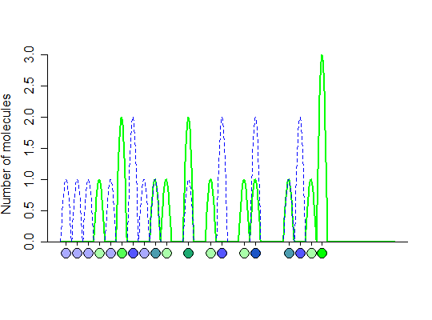
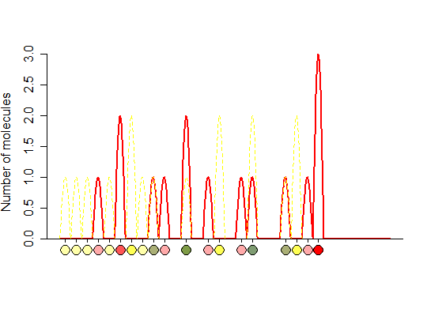
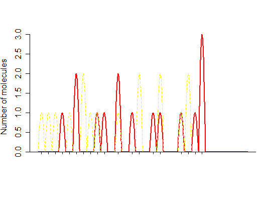
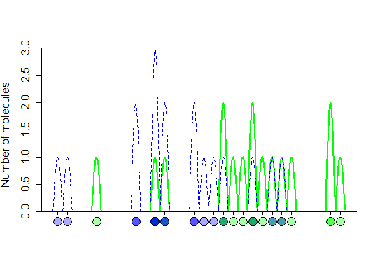

plot_vic_fam(vic, fam, col_vic = "green", col_fam = "blue", circle = TRUE)
ddpcr.ddpcr.This function generates an amplitude plot of two fluorescence channels as found in droplet digital PCR.
Droplet digital PCR experiments consist of three steps (droplet generation, clonal amplification, droplet amplitude analysis). Typically 20000 nano-sized droplets are analyzed and separated into amplification-positive and amplification-negative droplets. An example of such system is the Bio-Rad QX100 and QX200 (Pinheiro et al. 2012). Such systems have applications in the detection of rare DNA target copies, the determination of copy number variations (CNV), detection of mutation, or expression analysis of genes or miRNA. Each droplet is analyzed individually using a virtual two-color detection system. The channels are treated separately but finally aligned (e.g., FAM and VIC or FAM and HEX).
Pinheiro, L.B., Coleman, V.A., Hindson, C.M., Herrmann, J., Hindson, B.J., Bhat, S., and Emslie, K.R. (2012). Evaluation of a droplet digital polymerase chain reaction format for DNA copy number quantification. Anal. Chem. 84, 1003 - 1011.
# Generate an amplitude plot for the first fluorescence channel (e.g., FAM) fluos1 <- sim_ddpcr(m = 16, n = 30, times = 100, pos_sums = FALSE, n_exp = 1, fluo = list(0.1, 0)) # Generate an amplitude plot for the second fluorescence channel (e.g., VIC) fluos2 <- sim_ddpcr(m = 16, n = 30, times = 100, pos_sums = FALSE, n_exp = 1, fluo = list(0.1, 0)) # Plot the amplitudes of both fluorescence channel in an aligned fashion plot_vic_fam(fam = fluos1, vic = fluos2)
# Same as above but different colors plot_vic_fam(fam = fluos1, vic = fluos2, col_vic = "red", col_fam = "yellow")
# Same as above without circles plot_vic_fam(fam = fluos1, vic = fluos2, col_vic = "red", col_fam = "yellow", circle = FALSE)
# Generate two channels in one object and plot them fluos_both <- sim_ddpcr(m = 16, n = 30, times = 100, pos_sums = FALSE, n_exp = 2, fluo = list(0.1, 0)) plot_vic_fam(extract_dpcr(fluos_both, 1), extract_dpcr(fluos_both, 2))